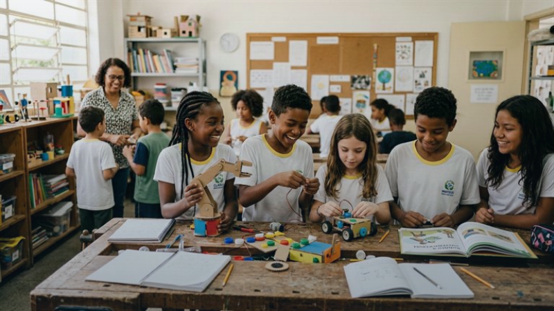

Programas Estratégicos de Impacto Social
Programas Estratégicos de Impacto Social
Soluciones comunitarias continuas enfocadas en la emancipación humana, la ciudadanía activa y la superación de la pobreza extrema.

Educación Integral
Activo / En Expansión
Novos Caminhos — Educación y Ciudadanía
Tutorías escolares en matemáticas y lengua materna, alfabetización digital, robótica comunitaria y acompañamiento emocional para jóvenes.
Território: Valparaíso de Goiás (Barrios Céu Azul, Anhanguera e Ipanema)
< 1.8%
Deserción Escolar Reducida
18
Alumnos Premiados en Olimpiadas
1.840h
Horas de Refuerzo Anuales

Seguridad Alimentaria
Activo / Continuo
Prato que Transforma — Nutrición y Huertos Urbanos
Lucha contra la inseguridad alimentaria mediante comedores solidarios, huertos agroecológicos urbanos y educación para el consumo saludable.
Território: Valparaíso de Goiás y Ciudad Ocidental
145.000
Comidas Balanceadas al Año
240
Familias con Huertos Activos
68 ton
Toneladas de Alimentos Cosechados

Inclusión Laboral
Activo / Matrícula Abierta
Renda e Futuro — Inclusión Productiva y Empleo
Cursos profesionales en confección textil, panadería y nuevas tecnologías, respaldados con asesoría en microcréditos para el autoempleo.
Território: Región Metropolitana del Entorno del DF
64%
Egresados Registrados en Régimen Formal
42
Microempresas Incubadas
+74%
Aumento Promedio de Ingresos

Infraestructura Comunitaria
Activo / Comunitario
Comunidade Viva — Infraestructura y Cohesión Social
Movilización vecinal para rehabilitar plazas públicas, iluminación comunitaria, jornadas de mejora de viviendas y asambleas barriales.
Território: Valparaíso de Goiás (Polos Céu Azul y Anhanguera)
12
Espacios Públicos Recuperados
620
Vecinos Movilizados en Jornadas
-38%
Reducción de Incidentes en la Zona